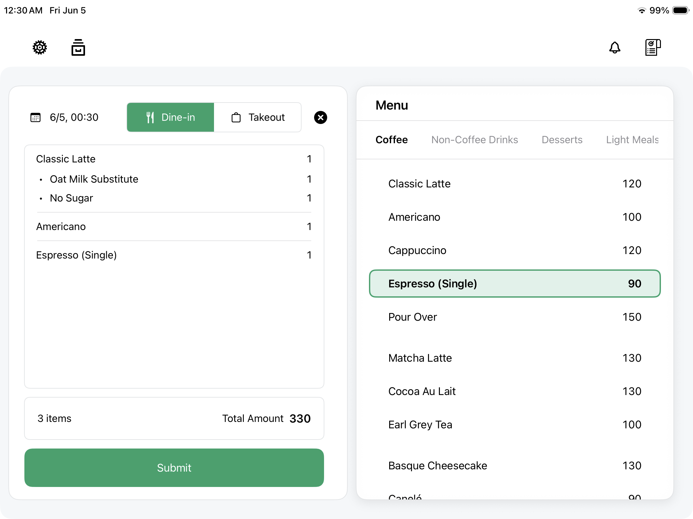

Set what you sell
Create the items, prices, and options that every order starts from.
Work offline with catalog, orders, cash and external payment records, receipts, and daily close in one flow. Slip records payments but does not process them.

Core order screen · Catalog, current sale, and cash total in one view
Each feature supports a concrete step in the shift. Nothing here depends on a large back-office system before a shop can start selling.
Create the items, prices, and options that every order starts from.
Add items, adjust quantities, edit notes, and keep the order readable.
Record cash payments and keep refunds visible in the shift state.
Print receipts when the customer or shop needs a paper record.
Review sales, refunds, cash count, and close status before the shift ends.
These views support the main order flow: set up the register, print receipts, and understand the day.

Categories, items, and counts stay visible so the register starts from what the shop actually sells.

Receipt and ticket outputs are configured from the same operating surface, so paper stays part of the shift instead of a separate back-office task.

Revenue, order value, customer count, and top items help the owner understand where the shift stands.
Catalog keeps products, options, and prices close to the order flow. The cashier should not have to move through a separate system just to find the item a customer is asking for.
Slip keeps order actions direct: add items, edit quantities, attach notes, and keep the current sale understandable while the line is moving.
Slip focuses this part of the flow on cash: cash due, cash received, refunds, and receipt printing stay visible before the sale is closed.
Receipts are treated as part of the sale. When the shop needs paper, the action stays near the order and cash state instead of becoming a separate task.
Daily close brings sales, refunds, cash count, and close status into one review, so the owner can see where the day stands before moving on.
Slip starts with the essential POS workflow first. Integrations can grow around that core when they become useful.
| Area | Role in Slip | Status |
|---|---|---|
| Catalog | Products, prices, and options start the sales flow. | Core |
| Orders | The register can create and adjust sales from one focused surface. | Core |
| Cash | Cash payments and refunds stay visible for close. | Core |
| Receipts | Receipt printing stays attached to the sale. | Core |
| Integrations | Additional services can grow around the core workflow when they are useful. | Later |
Download Slip POS and review the essential flow: catalog, orders, cash payments, receipts, and daily close.